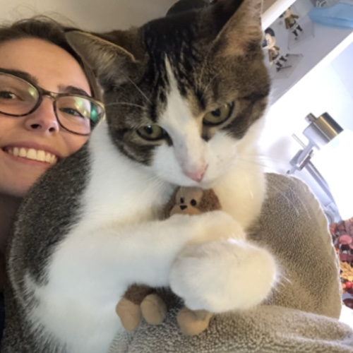

by Olivia Giraldo
In this page, I learned how to use javascript to create responsive images! Click on my first image to change the border color, then hover over my second image to put sunglasses on Kitkat. See my GitHub repo here.
Javascript responsiveness was inspired by professor McAdams, first and second image code credit.
This is Kitkat, my cat. She is a little more than a year old, and she loves this monkey toy. Original photo by me, Olivia Giraldo.
Kitkat also loves to be annoying. This is her sitting in on a game of Magic: The Gathering. Original photo by me, Olivia Giraldo.